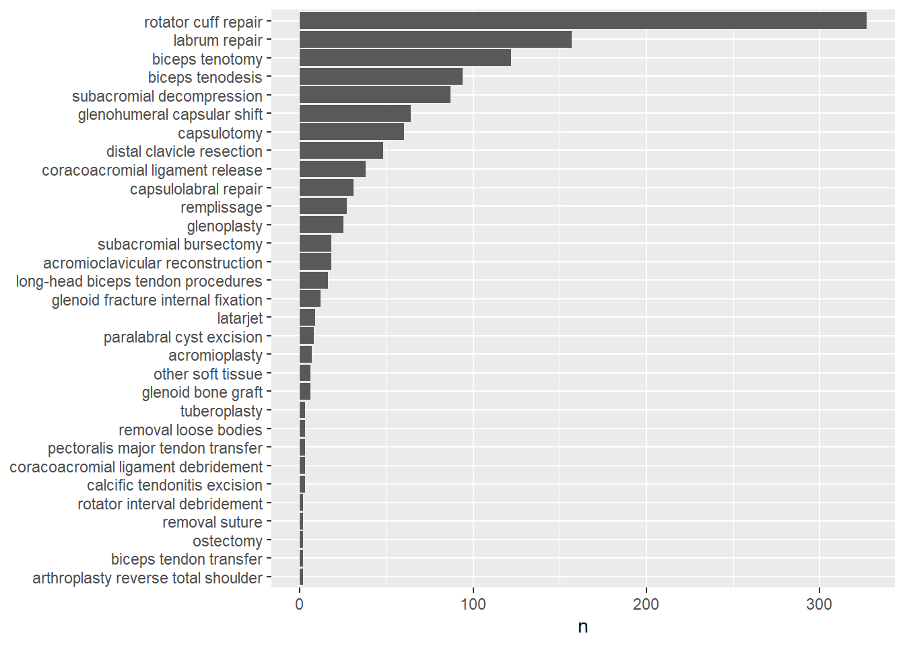
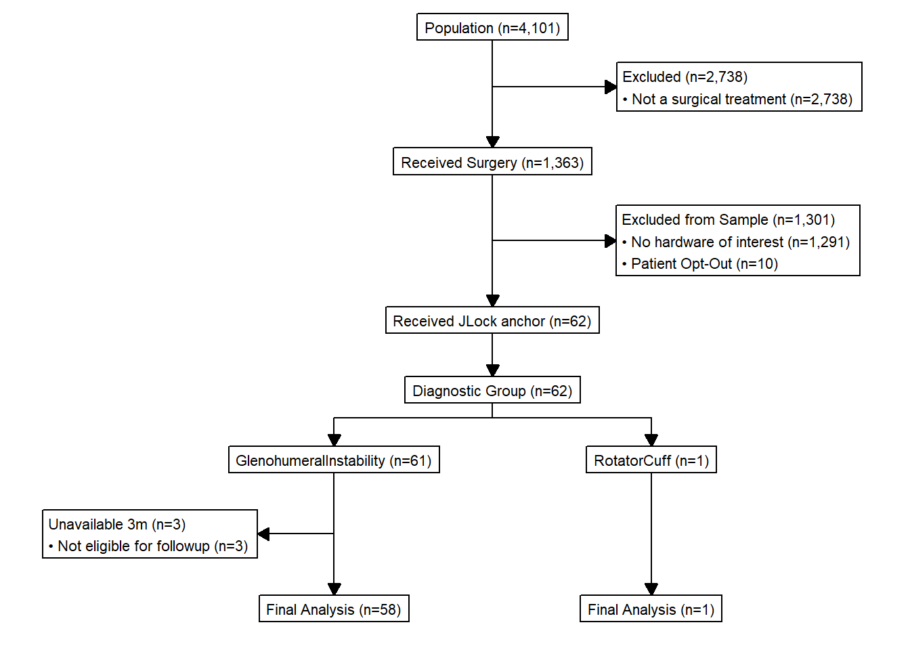
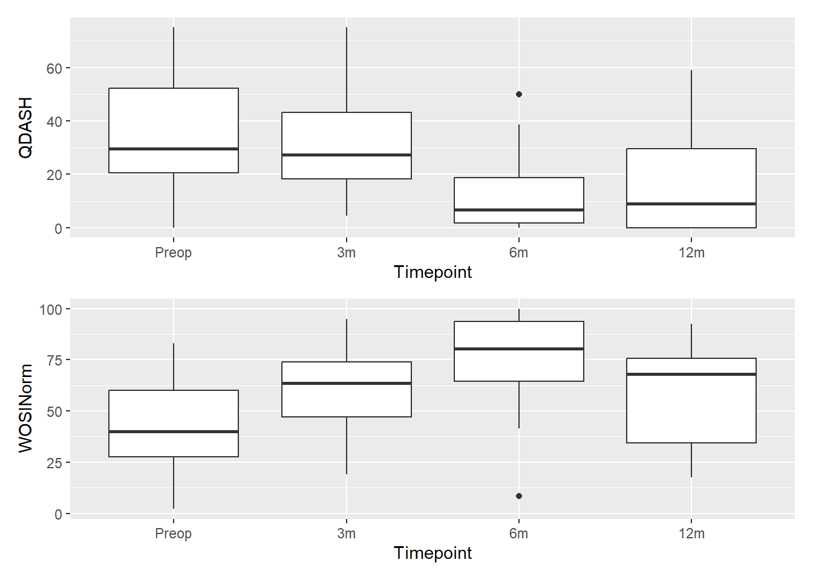

The snapshot date was 31-Aug-2025 and the report prepared 17-Sep-2025. The imported data contains a dataframe of 1417 cases returned from the Rotator Cuff cohort, a dataframe of 473 cases returned from the Glenohumeral Instability cohort and a dataframe of 1571 cases from the General cohort. An additional dataframe was retrieved of 4040 cases to generate the STROBE flow chart from the PRULO registry.
PRULO_MedactaReport
1 Preamble
Author: Corey Scholes, EBM Analytics
Sponsors: Assoc Prof Kevin Eng and Prof Richard Page, Geelong Orthopaedics
EBMAReference: RC_MedactaReporting_KE010Sep25
Version: 1.0
2 Introduction
The surgeons from Geelong Orthopaedics participating in the Patient Registry of Upper Limb Pathology Outcomes (PRULO) specialise in joint replacement, sports injuries, upper limb and hand surgery, and trauma. The PRULO registry collates and stores patient outcomes collected routinely as part of the standard clinical pathway for upper limb pathology treatment.
The registry comprises three patient cohorts: rotator cuff pathology, glenohumeral instability, and general shoulder pathologies. Outcomes data collected by the registry include objective joint function, patient reported outcomes (pain, satisfaction, quality of life), radiological findings, surgical treatment and rates of revision surgery or complications.
The dataset is derived from the PRULO registry snapshot and live database tables. A protocol has been previously prepared for the registry Scholes et al. (2023).
3 Glossary
To clarify terms used throughout the report, a glossary is presented below.
| Term | Definition |
|---|---|
| Case Failure | Patient presents in a state such that i) a repaired construct is deemed to be absent healing, or has reinjured subsequent to the index procedure ii) the shoulder presents in a state such that removal of hardware or procedure revision (single or multi-stage) is recommended |
| Reoperation | A theatre procedure subsequent to the index surgery that does not involve removal, replacement or modification of the construct. |
| Case | A definitive reconstruction procedure performed on a patient, excluding a reoperation, but including revision procedures. |
| Revision Else | A repeat definitive procedure performed on a case where the previous definitive procedure has been performed by another surgeon |
| Revision Own | A repeat definitive procedure performed on a case where the previous definitive procedure has been performed by the same contributing surgeon |
| QuickDASH | Short form of the Disabilities of the Arm, Hand and Shoulder questionnaire. The questions are directed toward pain and disability associated with upper limb activities. A diminishing score over time reflects improved function. |
| WORCNorm | Western Ontario Rotator Cuff Index is a questionnaire specific to rotator cuff pathology and is scored as the sum of a series of 10mm visual analogue scales. A normalised score is calculated to convert the sum to a percentage score of normal (100%). |
| WORC Physical Question 3 | Question 3 of the Physical subscale of the WORC asks “How much weakness do you experience in your shoulder?” and is a |
| WOSINorm | Western Ontario Rotator Cuff Index is a questionnaire specific to glenohumeral instability and associated pathology and is scored as the sum of a series of 10mm visual analogue scales. A normalised score is calculated to convert the sum to a percentage score of normal (100%). |
4 Data Preparation
The steps below outline the process for preparing registry data for analysis.
4.1 Load libraries
Load up required packages in advance.
4.3 Functions for Processing
Include a series of functions to call later in the file for processing data imports.
4.4 Import Inputs
Data was imported from the PRULO registry. Configuration tables were also loaded, including the product table to describe the products of interest and list identifiers to match to surgical records. The table was modified to include a material column (PEEK or BR) and product identifiers.
4.5 Combine and Filter for 3 month follow up
The dataset was filtered to only include records with a minimum of 3 months follow up at the time of analysis.
4.6 Prepare dataset for procedure
Procedure data was combined from all cohorts. New columns were created based on conditional statements, cases were filtered where procedure data was unavailable (non-surgical, missing intraoperative data). Procedure data was further processed to standardise labels, categorised by structure (Rotator Cuff, Labrum, Capsule and Ligament) and adjunct procedures reorganised to account for variation across surgical indication.

4.7 Adjust dataset for time to event
To account for variations in follow up, time to event was calculated between date of surgery and change of record status. Treatment record end was defined as any change in state such that the treatment would be considered no longer active, has not achieved its clinical purpose or is no longer relevant. For example, in the case of soft tissue repair, if the target tissue represents with a retear, or the construct presents in a state such that hardware removal or replacement is recommended, then the treatment record status is set to inactive and a new treatment record is created to capture the subsequent treatment. The treatments with inactive statuses were extracted to a shared file for review. The subsequent treatment was manually labelled to create the Subsequent Treatment variable.
Additional numeric variables were calculated from inputs collected within the registry (e.g. Symptom Duration).
Read in results of manual review of failure cases and categorise subsequent treatments.
4.8 Prepare product groups of interest
Tables were rearranged and the dataset was filtered against an ignore list created from the product configuration table. Regular expressions were used to match products of interest to intraoperative hardware information and to sum the instances of implantation for each product of interest.
4.9 Adjust patient demographics for presentation
Recode Sex for report presentation.
4.10 Prepare Patient-Reported Outcomes
The PRULO registry uses the QuickDASH (Gummesson, Ward, and Atroshi 2006) for all cases, Western Ontario Rotator Cuff Index (WORC) (Kirkley, Alvarez, and Griffin 2003) for records placed into the Rotator Cuff cohort and the Western Ontario Shoulder Instability Index (WOSI) (Kirkley et al. 1998) for records placed in the Glenohumeral Instability cohort to monitor patient-reported outcomes before and after surgery at defined time intervals. The metrics utilised for each questionnaire in this report are the total score (QuickDaSH) and the normalised total score (WORC and WOSI). A single question from the WORC was also presented (Question 3 of the Physical subscale) that asks “How much weakness do you experience in your shoulder?” to observe potential patterns relevant specifically to cuff repair. PROMs entries were restricted to cases where the treatment record was “eligible” for the time point. Tables were reshaped and variables refactored, with delta variables generated (difference to baseline at each followup) to enable plotting and table generation.
4.11 Prepare adverse events
Adverse events were monitored by near real-time chart review and surgical bookings. Events were added to the registry using an electronic form and linked to the treatment records. The data import was assessed for data entry validity, differences between date of event, date of reoperation and surgery date of the index treatment were calculated to assess date validity. Additional data preparation and cleaning was performed, which included filtering and standardizing key identifiers across multiple datasets. Missing values were identified to ensure data consistency. The adverse events were attached to the treatment data with filters applied to constrain to pertinent records and time periods. Time-based metrics were calculated and classification was performed based on the event descriptions using regular expressions. Finally, it conducted data quality checks, identifying potential discrepancies and duplicate entries. After the data transformation, the revised dataset was exported to an external file for review. The code then generated multiple subset datasets, each focusing on a specific type of complication and isolating the earliest occurrence for each unique treatment. This was used for retrieval for each product report.
Split out into arrays to bounce against for each Product report
Intraoperative complications were reviewed manually for mechanism.
5 PRULO Summary
The diagram below summarises recruitment and categorisation of patients into the PRULO registry.

| Cohort | ICD10 | n |
|---|---|---|
| General | M75.6 | 2 |
| General | M24.0 | 1 |
| General | M75.5 | 1 |
| Glenohumeral Instability | S43.0 | 20 |
| Glenohumeral Instability | S43.42 | 14 |
| Glenohumeral Instability | M24.4 | 12 |
| Glenohumeral Instability | M25.31 | 7 |
| Glenohumeral Instability | M24.21 | 2 |
| Rotator Cuff | S46.0 | 1 |
The table below summarises patient diagnoses in the PRULO registry. The primary pathology for a given presentation was derived from clinical notes and labelled with an ICD-10 (international) code. Each code was included in a configuration file to link to a registry cohort.
Characteristic | Statistic | Overall | General | Glenohumeral Instability | Rotator Cuff |
|---|---|---|---|---|---|
Age at Initial Consultation (Years) | Median (Q1, Q3) | 28 (19, 35) | 31 (23, 39) | 27 (19, 35) | 59 (59, 59) |
Male | % (n) | 72 (43) | 50 (2) | 73 (40) | 100 (1) |
Dominant Side | % (n) | 54 (25) | 50 (2) | 55 (23) | NA (0) |
Bilateral Presentation | % (n) | 12 (7) | 0 (0) | 13 (7) | 0 (0) |
Symptom Duration (Weeks) | Median (Q1, Q3) | 81 (20, 291) | 278 (25, 531) | 81 (20, 262) | NA (NA, NA) |
Symptom Duration Category2 | |||||
<=0.5 | % (n) | 29 (10) | 50 (1) | 27 (9) | NA (0) |
>0.5 | % (n) | 71 (25) | 50 (1) | 73 (24) | NA (0) |
Treatment Record Active3 | % (n) | 95 (57) | 100 (4) | 95 (52) | 100 (1) |
Patient Record Active4 | % (n) | 100 (60) | 100 (4) | 100 (55) | 100 (1) |
1Median (Q1, Q3); % (n) | |||||
2Dichotomised below or equal to 0.5 years or greater than 0.5 years | |||||
3Treatment record remains active - no change to follow up | |||||
4Patient record remains open - no change to consent or mortality status | |||||
The overall registry enrolment is summarised in Table 3, describing how the population is summarised into cohorts.
6 Product Report - JLock
6.1 Overview
Usage of the Product within the patient group is summarised below.
There are 61 cases involving the anchor of interest. Surgeries were performed between 2022-Jul-05 and 2025-Aug-19. The procedures included [Labrum Repair] [Remplissage; Labrum Repair; Capsular Shift] [Labrum Repair; Capsular Shift] [Remplissage; Labrum Repair] [Other] [Tenotomy; Labrum Repair], and [Tenodesis; Labrum Repair; Capsular Shift].
6.2 Procedure Report - All
6.2.1 Patient Characteristics
Patient demographic, pathology, and treatment characteristics for this cohort receiving the Product are summarised below.
Characteristic | Statistic | N = 61 |
|---|---|---|
Age at Initial Consultation (Years) | Median (Q1, Q3) | 28 (19, 35) |
Male | % (n) | 72 (44) |
Cohort | ||
General | % (n) | 6.6 (4) |
Glenohumeral Instability | % (n) | 92 (56) |
Rotator Cuff | % (n) | 1.6 (1) |
Dominant Side | % (n) | 55 (26) |
Bilateral Presentation | % (n) | 11 (7) |
Symptom Duration (Weeks) | Median (Q1, Q3) | 81 (20, 291) |
Symptom Duration Category1 | ||
<=0.5 | % (n) | 29 (10) |
>0.5 | % (n) | 71 (25) |
Treatment Record Active2 | % (n) | 93 (57) |
Patient Record Active3 | % (n) | 100 (61) |
1Dichotomised below or equal to 0.5 years or greater than 0.5 years | ||
2Treatment record remains active - no change to follow up | ||
3Patient record remains open - no change to consent or mortality status | ||
6.2.2 Surgical Details
Surgical findings and management strategies are summarised below.
Characteristic | N = 611 |
|---|---|
Cuff Status | |
Intact | 98 (43) |
Partial Tear | 2.3 (1) |
Treatment Type | |
Primary | 95 (58) |
Revision Else | 1.6 (1) |
Revision Own | 3.3 (2) |
CuffRepair | |
None | 82 (50) |
Remplissage | 18 (11) |
RepairAugmentation | |
None | 100 (45) |
LongHeadBiceps | |
None | 97 (59) |
Tenodesis | 1.6 (1) |
Tenotomy | 1.6 (1) |
Labrum | |
Labrum Repair | 74 (45) |
None | 26 (16) |
LabrumRepair | |
Bankart | 74 (32) |
Not Repaired | 2.3 (1) |
Other2 | 7.0 (3) |
Posterior | 16 (7) |
CapsuleLigament | |
Capsular Shift | 46 (28) |
None | 52 (32) |
Other2 | 1.6 (1) |
Glenoid | |
Fracture fixation | 4.3 (2) |
None | 96 (44) |
AdjunctProcedure | |
None | 96 (44) |
Paralabral Cyst Excision | 4.3 (2) |
1% (n) | |
2Labral tear uncategorised | |
6.2.3 Treatment Survival
The mean follow up duration is 1.5 years, with a standard deviation of 0.94 years.
Failure or revision events as identified in the registry for this cohort are summarised below. Individual failure data can be accessed in Attachment 1.
Characteristic | 1 Weeks1 | 26 Weeks1 | 52 Weeks1 | 104 Weeks1 |
|---|---|---|---|---|
Procedure Survival | 100% (100% - 100%) | 98% (94% - 100%) | 96% (90% - 100%) | 93% (85% - 100%) |
1% survival with 95% confidence intervals | ||||
1Qxi8d45TDNet2d5-FYliyzgXsSW8Dx73A0oe4GPg0RI
6.2.4 Adverse Events
Complications and adverse events are summarised below. Individual reoperation data can be accessed in Attachment 1.
| TreatmentID | Description | Intervention | PostopManagement |
|---|---|---|---|
| 2360.2 | prior stabilisation, removed prior sutures | None required | No |
| 2729.1 | grphon anchor came out | Modified surgical technique | No |
| 3295.1 | bottom screw had no bite | None required | No |
Characteristic | N = 611 |
|---|---|
Infection | 0 (0) |
Ligament|Tendon (Retear) | 0 (0) |
Effusion | 0 (0) |
Pain | 2 (1) |
Hardware | 2 (1) |
Loosening | 5 (3) |
Instability | 0 (0) |
Stiffness | 13 (8) |
Neurological | 0 (0) |
Thrombosis | 0 (0) |
Other | 2 (1) |
Reoperation2 | 5 (3) |
Subsequent Treatment3 | |
Hardware Removal | 2 (1) |
Nonoperative Management | 3 (2) |
Not Applicable | 95 (58) |
Reoperation Delay (Weeks)4 | 34.5 (33.2) |
1% (n); Mean (SD) | |
2A theatre procedure subsequent to the index surgery that does not involve removal, replacement or modification of the construct. | |
3Management undertaken for procedures that have suffered tissue failure or required hardware removal or replacement | |
4Time between index procedure and reoperation | |
Write reoperations to external sheet
1Qxi8d45TDNet2d5-FYliyzgXsSW8Dx73A0oe4GPg0RI
6.2.5 Patient-Reported Outcomes
Complete case analysis of QDASH and WOSI Index Normalised is summarised below.

Characteristic | Preop | 3m | 6m | 12m |
|---|---|---|---|---|
QDASH | 30 (20 - 52) | 27 (18 - 45) | 7 (0 - 18) | 8 (0 - 23) |
QDASHDelta | NA (NA - NA) | 2 (-9 - 18) | 18 (7 - 36) | 13 (7 - 30) |
WOSINorm | 40 (27 - 63) | 63 (47 - 75) | 81 (64 - 94) | 69 (45 - 76) |
WOSIDelta | NA (NA - NA) | -57 (-73 - -34) | 32 (18 - 64) | 23 (18 - 41) |
1Median (Q1 - Q3) | ||||
References
Gummesson, Christina, Michael M Ward, and Isam Atroshi. 2006. “The Shortened Disabilities of the Arm, Shoulder and Hand Questionnaire (Quick DASH): Validity and Reliability Based on Responses Within the Full-Length DASH.” BMC Musculoskeletal Disorders 7 (1). https://doi.org/10.1186/1471-2474-7-44.
Kirkley, Alexandra, Christine Alvarez, and Sharon Griffin. 2003. “The Development and Evaluation of a Disease-Specific Quality-of-Life Questionnaire for Disorders of the Rotator Cuff: The Western Ontario Rotator Cuff Index.” Clinical Journal of Sport Medicine 13 (2): 84–92. https://doi.org/10.1097/00042752-200303000-00004.
Kirkley, Alexandra, Sharon Griffin, Heidi McLintock, and Linda Ng. 1998. “The Development and Evaluation of a Disease-Specific Quality of Life Measurement Tool for Shoulder Instability.” The American Journal of Sports Medicine 26 (6): 764–72. https://doi.org/10.1177/03635465980260060501.
Scholes, Corey, Kevin Eng, Meredith Harrison-Brown, Milad Ebrahimi, Graeme Brown, Stephen Gill, and Richard Page. 2023. “Patient Registry of Upper Limb Outcomes (PRULO): A Protocol for an Orthopaedic Clinical Quality Registry to Monitor Treatment Outcomes.” Journal of Surgical Protocols and Research Methodologies 2023 (4). https://doi.org/10.1093/jsprm/snad014.